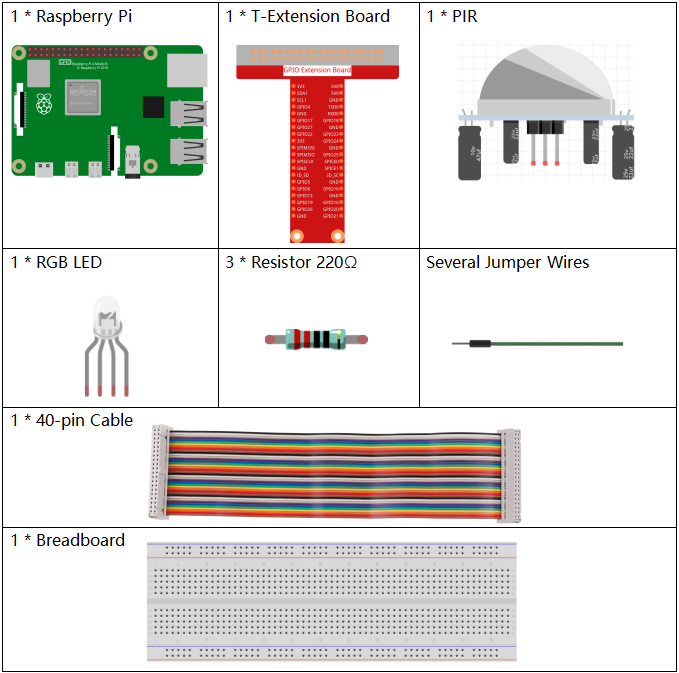

Nota
¡Hola! Bienvenido a la comunidad de entusiastas de SunFounder para Raspberry Pi, Arduino y ESP32 en Facebook. Únete a otros apasionados y profundiza en el uso de Raspberry Pi, Arduino y ESP32.
¿Por qué unirte?
Soporte de expertos: Resuelve problemas postventa y desafíos técnicos con la ayuda de nuestra comunidad y equipo.
Aprende y comparte: Intercambia consejos y tutoriales para mejorar tus habilidades.
Avances exclusivos: Obtén acceso anticipado a anuncios de nuevos productos y adelantos exclusivos.
Descuentos especiales: Disfruta de descuentos exclusivos en nuestros productos más recientes.
Promociones festivas y sorteos: Participa en sorteos y promociones de temporada.
üëâ ¬øListo para explorar y crear con nosotros? Haz clic en [Aqu√≠] y únete hoy mismo.
2.2.4 PIR
Introducción
En este proyecto, crearemos un dispositivo utilizando sensores piroeléctricos infrarrojos para detectar la proximidad de personas. Cuando alguien se acerque, el LED se encenderá automáticamente. Si no hay movimiento cercano, la luz se apagará. Este sensor de movimiento infrarrojo detecta la radiación infrarroja emitida por humanos y animales.
Componentes necesarios
En este proyecto, necesitamos los siguientes componentes.
Diagrama esquemático
Procedimientos experimentales
Paso 1: Construye el circuito.
Paso 2: Ve a la carpeta del código.
cd ~/davinci-kit-for-raspberry-pi/python-pi5
Paso 3: Ejecuta el archivo ejecutable.
sudo python3 2.2.4_PIR.py
Después de ejecutar el código, el PIR detectará el entorno y hará que el LED RGB se ilumine en amarillo si detecta a alguien pasando.
El módulo PIR tiene dos potenciómetros: uno para ajustar la sensibilidad y otro para ajustar la distancia de detección. Para un mejor rendimiento, gira ambos potenciómetros en sentido contrario a las agujas del reloj hasta el final.

Advertencia
Si aparece un mensaje de error RuntimeError: Cannot determine SOC peripheral base address, consulta Si gpiozero no funciona.
Código
Nota
Puedes Modificar/Restablecer/Copiar/Ejecutar/Detener el código a continuación. Pero antes, debes ir a la ruta del código fuente como davinci-kit-for-raspberry-pi/python-pi5. Después de modificar el código, puedes ejecutarlo directamente para ver el efecto.
#!/usr/bin/env python3
from gpiozero import RGBLED, MotionSensor
from time import sleep
# Inicializar LED RGB y sensor de movimiento PIR utilizando la biblioteca GPIO Zero
led = RGBLED(red=18, green=27, blue=22) # LED RGB conectado a los pines GPIO 18 (Rojo), 27 (Verde), 22 (Azul)
pir = MotionSensor(17) # Sensor PIR conectado al pin GPIO 17
try:
# Monitorear continuamente el movimiento y actualizar el color del LED
while True:
if pir.motion_detected: # Verificar si el sensor PIR detecta movimiento
led.color = (1, 1, 0) # Configurar el color del LED a amarillo (Rojo + Verde)
else:
led.color = (0, 0, 1) # Configurar el color del LED a azul (solo Azul)
sleep(0.1) # Pequeño retardo para reducir la carga de la CPU
except KeyboardInterrupt:
# Manejar KeyboardInterrupt (Ctrl+C) para salir del bucle de manera segura
pass
Explicación del código
Importa la clase
RGBLEDpara controlar un LED RGB y la claseMotionSensorpara detectar movimiento desde la biblioteca GPIO Zero. También importa la funciónsleeppara crear pausas.#!/usr/bin/env python3 from gpiozero import RGBLED, MotionSensor from time import sleep
Inicializa un LED RGB con los componentes rojo, verde y azul conectados a los pines GPIO 18, 27 y 22, respectivamente. También inicializa un sensor PIR en el pin GPIO 17.
# Inicializar LED RGB y sensor de movimiento PIR utilizando la biblioteca GPIO Zero led = RGBLED(red=18, green=27, blue=22) # LED RGB conectado a los pines GPIO 18 (Rojo), 27 (Verde), 22 (Azul) pir = MotionSensor(17) # Sensor PIR conectado al pin GPIO 17
El programa entra en un bucle infinito, revisando continuamente el movimiento con el sensor PIR. Si se detecta movimiento, el LED se ilumina en amarillo (mezcla de rojo y verde). Si no se detecta movimiento, el LED se enciende en azul. Una pequeña pausa de 0.1 segundos reduce la carga de la CPU.
try: # Monitorear continuamente el movimiento y actualizar el color del LED while True: if pir.motion_detected: # Verificar si el sensor PIR detecta movimiento led.color = (1, 1, 0) # Configurar el color del LED a amarillo (Rojo + Verde) else: led.color = (0, 0, 1) # Configurar el color del LED a azul (solo Azul) sleep(0.1) # Pequeño retardo para reducir la carga de la CPU except KeyboardInterrupt: # Manejar KeyboardInterrupt (Ctrl+C) para salir del bucle de manera segura pass